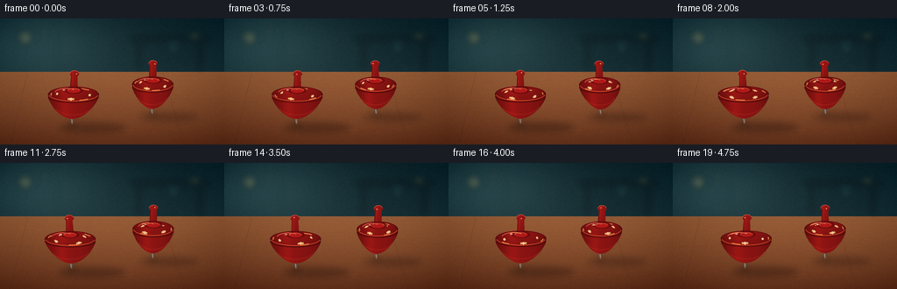
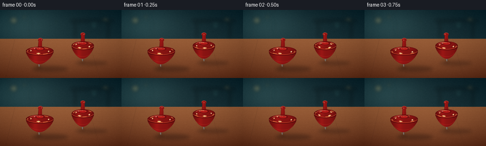

CODING AGENTS AS PIXEL WORLD MODELS
traex/GPT-5.6-Sol · instance_preservation_0039
点击播放 · 原生 RGB 像素
逐轮保存的候选
回放视频、检查图与代码变化。
每份候选均可单独播放。实际图片检查记录在下方工具轨迹中。
候选 01播放与检查图
点击播放 · 原生 RGB 像素

展开代码变化
--- 上一保存版本
+++ 本次保存版本
@@ -0,0 +1,273 @@
+from pathlib import Path
+import math
+import numpy as np
+from PIL import Image, ImageDraw, ImageFilter
+import artifact_io
+
+# Deterministic hand-rendered animation of two lacquered spinning tops.
+W, H, N, FPS = 256, 144, 20, 4.0
+S = 4
+WS, HS = W*S, H*S
+rng = np.random.default_rng(3901)
+
+
+def sc(v):
+ return int(round(v*S))
+
+def pts(seq):
+ return [(sc(x), sc(y)) for x, y in seq]
+
+def make_background():
+ # soft, cinematic teal workshop background and a warm wooden table
+ yy, xx = np.mgrid[0:HS, 0:WS]
+ y = yy / S
+ x = xx / S
+ a = np.zeros((HS, WS, 3), dtype=np.float32)
+ horizon = 61.0
+ wall = y < horizon
+ # vignetted blue-green wall
+ a[..., 0] = 18 + 12*(y/H)
+ a[..., 1] = 39 + 18*(y/H)
+ a[..., 2] = 45 + 17*(y/H)
+ # broad window-light glow at left
+ glow = np.exp(-((x-48)**2/(2*57**2) + (y-29)**2/(2*33**2)))
+ a += glow[..., None] * np.array([22, 29, 27], np.float32)
+ # tabletop gradient
+ table_y = np.maximum(0, y-horizon)
+ t = table_y/(H-horizon)
+ wood = np.zeros_like(a)
+ wood[..., 0] = 133 - 46*t
+ wood[..., 1] = 82 - 39*t
+ wood[..., 2] = 50 - 25*t
+ # warm light pool near the tops
+ warm = np.exp(-((x-124)**2/(2*105**2) + (y-93)**2/(2*47**2)))
+ wood += warm[..., None] * np.array([23, 14, 7], np.float32)
+ a[~wall] = wood[~wall]
+ # fine low contrast photographic grain
+ tiny = rng.normal(0, 1, (H, W)).astype(np.float32)
+ grain = np.asarray(Image.fromarray(tiny, mode='F').resize((WS, HS), Image.Resampling.BICUBIC))
+ a += grain[..., None] * 1.35
+ # vignette
+ vign = np.clip(((x-W/2)/(W*.72))**2 + ((y-H/2)/(H*.82))**2, 0, 1)
+ a -= vign[..., None] * np.array([18, 15, 13])
+ im = Image.fromarray(np.uint8(np.clip(a, 0, 255)), 'RGB')
+
+ # softly defocused workshop lights and wall details
+ blur = Image.new('RGBA', (WS, HS), (0, 0, 0, 0))
+ d = ImageDraw.Draw(blur, 'RGBA')
+ # vertical panel seams
+ for X in (18, 64, 212):
+ d.line([(sc(X), 0), (sc(X), sc(59))], fill=(6, 20, 24, 55), width=sc(1.0))
+ # background shelf
+ d.rounded_rectangle((sc(149), sc(21), sc(239), sc(25)), radius=sc(2), fill=(7, 18, 22, 110))
+ d.rectangle((sc(157), sc(24), sc(160), sc(58)), fill=(7, 18, 21, 100))
+ d.rectangle((sc(226), sc(24), sc(230), sc(59)), fill=(7, 18, 21, 100))
+ # bokeh highlights
+ for cx, cy, r, col in [
+ (29, 22, 8, (255,205,113,47)), (51, 15, 3.5, (255,225,151,65)),
+ (198, 34, 6, (102,191,181,31)), (222, 18, 4, (255,194,102,34)),
+ (119, 24, 2.5, (255,221,162,31))]:
+ d.ellipse((sc(cx-r), sc(cy-r), sc(cx+r), sc(cy+r)), fill=col)
+ blur = blur.filter(ImageFilter.GaussianBlur(sc(3.7)))
+ im = Image.alpha_composite(im.convert('RGBA'), blur)
+
+ # tabletop grain, seams and scratches, kept subtle
+ detail = Image.new('RGBA', (WS, HS), (0,0,0,0))
+ d = ImageDraw.Draw(detail, 'RGBA')
+ # perspective plank joints
+ d.line(pts([(31,62),(12,144)]), fill=(55,29,19,45), width=sc(.65))
+ d.line(pts([(186,62),(210,144)]), fill=(57,30,18,43), width=sc(.65))
+ d.line(pts([(0,95),(256,91)]), fill=(47,25,17,27), width=sc(.55))
+ # flowing grain curves
+ for j in range(16):
+ basey = 67 + j*5.1 + rng.uniform(-1.5,1.5)
+ phase = rng.uniform(0, math.tau)
+ curve=[]
+ for X in range(-10, 267, 8):
+ Y = basey + 1.0*math.sin(X/29+phase) + .35*math.sin(X/8+phase*1.7)
+ curve.append((X,Y))
+ d.line(pts(curve), fill=(65,35,22,int(rng.integers(12,27))), width=sc(.35))
+ # a few thin scratches catch the light
+ d.line(pts([(111,130),(151,127)]), fill=(228,165,103,28), width=sc(.45))
+ d.line(pts([(196,119),(224,118)]), fill=(235,169,104,20), width=sc(.4))
+ im = Image.alpha_composite(im, detail)
+ return im
+
+BG = make_background()
+
+
+def gradient_rgba(mask, cx, cy, radius, upper=False):
+ yy, xx = np.mgrid[0:HS, 0:WS]
+ xb = xx/S
+ yb = yy/S
+ # cylindrical red lacquer shading with warm left key and sharp gloss
+ q = (xb-cx)/max(radius, 1)
+ edge = np.sqrt(np.clip(1-q*q, 0, 1))
+ key = np.exp(-((q+0.34)/0.23)**2)
+ shade = .44 + .50*edge + .18*key
+ if upper:
+ shade *= .92 + .18*np.clip((cy-yb+8)/18, 0, 1)
+ r = 105*shade + 38
+ g = 18*shade + 3
+ b = 15*shade + 4
+ arr = np.empty((HS,WS,4), dtype=np.uint8)
+ arr[...,0] = np.clip(r,0,255)
+ arr[...,1] = np.clip(g,0,255)
+ arr[...,2] = np.clip(b,0,255)
+ arr[...,3] = np.asarray(mask)
+ return Image.fromarray(arr, 'RGBA')
+
+
+def render_shadow(frame, cx, floor_y, R, lean_x, strength=1.0):
+ lay = Image.new('RGBA', (WS,HS), (0,0,0,0))
+ d = ImageDraw.Draw(lay, 'RGBA')
+ # soft directional shadow to the lower right and a tight contact shadow
+ d.ellipse((sc(cx-15), sc(floor_y-1.3), sc(cx+R*1.55+16), sc(floor_y+R*.37)),
+ fill=(17,8,7,int(72*strength)))
+ d.ellipse((sc(cx-5), sc(floor_y-1.2), sc(cx+6), sc(floor_y+2.7)),
+ fill=(13,6,4,int(130*strength)))
+ lay = lay.filter(ImageFilter.GaussianBlur(sc(3.6)))
+ frame.alpha_composite(lay)
+
+
+def render_top(frame, cx, floor_y, R, spin, precess, phase, far=False):
+ # The point stays almost planted while the axis slowly precesses.
+ lean = (2.7 if not far else 2.1)
+ lean_x = lean * math.cos(precess)
+ bob = .35*math.sin(precess*2+phase)
+ floor_y += bob
+ cx += .55*math.sin(precess*1.35+phase)
+ render_shadow(frame, cx, floor_y, R, lean_x, .86 if far else 1.0)
+
+ def axis_x(rel_y):
+ return cx + lean_x * (-rel_y)/58.0
+
+ # faint rotation smear hugs only the widest rim
+ smear = Image.new('RGBA',(WS,HS),(0,0,0,0)); sd=ImageDraw.Draw(smear,'RGBA')
+ rimcx = axis_x(-31)
+ for k in range(3):
+ al = int(23-5*k)
+ off = (k-1)*.7
+ sd.arc((sc(rimcx-R-2-off),sc(floor_y-39-off*.2),sc(rimcx+R+2+off),sc(floor_y-22+off*.2)),
+ start=int((spin*180/math.pi+28+k*14)%360), end=int((spin*180/math.pi+92+k*14)%360),
+ fill=(247,104,62,al), width=sc(.8))
+ smear=smear.filter(ImageFilter.GaussianBlur(sc(.7)))
+ frame.alpha_composite(smear)
+
+ # metal pin, behind the wooden body
+ pin = Image.new('RGBA',(WS,HS),(0,0,0,0)); d=ImageDraw.Draw(pin,'RGBA')
+ px=axis_x(-4)
+ d.polygon(pts([(px-2,floor_y-8),(px+2,floor_y-8),(cx+1.0,floor_y-.5),(cx-1.1,floor_y-.5)]),
+ fill=(90,82,78,255))
+ d.line(pts([(px-.8,floor_y-7),(cx-.25,floor_y-1)]),fill=(218,205,183,175),width=sc(.65))
+ frame.alpha_composite(pin)
+
+ # stem and rounded knob are painted the same red lacquer
+ stem = Image.new('L',(WS,HS),0); sm=ImageDraw.Draw(stem)
+ sx_top=axis_x(-57); sx_bot=axis_x(-34)
+ sm.polygon(pts([(sx_top-3.4,floor_y-57),(sx_top+3.4,floor_y-57),
+ (sx_bot+4.7,floor_y-33),(sx_bot-4.7,floor_y-33)]),fill=255)
+ sm.ellipse((sc(sx_top-5.1),sc(floor_y-61),sc(sx_top+5.1),sc(floor_y-53.5)),fill=255)
+ frame.alpha_composite(gradient_rgba(stem, sx_top, floor_y-45, 7, True))
+ outline=Image.new('RGBA',(WS,HS),(0,0,0,0)); od=ImageDraw.Draw(outline,'RGBA')
+ od.line(pts([(sx_top-3.3,floor_y-56),(sx_bot-4.5,floor_y-34)]),fill=(73,8,8,145),width=sc(.65))
+ od.arc((sc(sx_top-5.1),sc(floor_y-61),sc(sx_top+5.1),sc(floor_y-53.5)),180,350,fill=(255,134,102,120),width=sc(.65))
+ frame.alpha_composite(outline)
+
+ # Lower conical body: curved silhouette from rim to the point.
+ cone_mask=Image.new('L',(WS,HS),0); cm=ImageDraw.Draw(cone_mask)
+ left=[]; right=[]
+ for i in range(18):
+ u=i/17
+ ry=-31 + 25.8*u
+ half=R*(1-u**1.35)**.58
+ cc=axis_x(ry)
+ left.append((cc-half,floor_y+ry)); right.append((cc+half,floor_y+ry))
+ cm.polygon(pts(left+right[::-1]),fill=255)
+ frame.alpha_composite(gradient_rgba(cone_mask, rimcx, floor_y-23, R, False))
+
+ # Deep lower-rim line adds a crisp manufactured edge.
+ edges=Image.new('RGBA',(WS,HS),(0,0,0,0)); ed=ImageDraw.Draw(edges,'RGBA')
+ ed.arc((sc(rimcx-R),sc(floor_y-37.5),sc(rimcx+R),sc(floor_y-24.0)),4,176,
+ fill=(68,7,8,190),width=sc(1.05))
+ # warm reflection across lower cone
+ ed.arc((sc(rimcx-R*.73),sc(floor_y-31),sc(rimcx+R*.73),sc(floor_y-10)),12,164,
+ fill=(239,66,43,62),width=sc(.7))
+ frame.alpha_composite(edges)
+
+ # Upper domed cap.
+ cap_mask=Image.new('L',(WS,HS),0); capd=ImageDraw.Draw(cap_mask)
+ capcy=floor_y-33.5
+ capd.ellipse((sc(rimcx-R),sc(capcy-9),sc(rimcx+R),sc(capcy+9)),fill=255)
+ cap_img=gradient_rgba(cap_mask,rimcx,capcy,R,True)
+ frame.alpha_composite(cap_img)
+
+ # Painted ivory motifs rotate around the projected top face, visibly proving spin.
+ deco=Image.new('RGBA',(WS,HS),(0,0,0,0)); dd=ImageDraw.Draw(deco,'RGBA')
+ # dashed annular markings, ordered back-to-front by projected y
+ marks=[]
+ for k in range(4):
+ a=spin+k*math.pi/2
+ mx=rimcx+R*.65*math.cos(a)
+ my=capcy+5.4*math.sin(a)
+ marks.append((my,a,mx))
+ for my,a,mx in sorted(marks):
+ size=1.2+1.2*((my-(capcy-5.4))/10.8)
+ # tangent oval-like brush mark
+ vx=-math.sin(a)*3.6; vy=math.cos(a)*1.2
+ dd.line(pts([(mx-vx,my-vy),(mx+vx,my+vy)]),fill=(255,205,119,205),width=sc(size))
+ dd.ellipse((sc(mx-size*.65),sc(my-size*.65),sc(mx+size*.65),sc(my+size*.65)),fill=(255,231,171,215))
+ # three short rotating rim dashes
+ for k in range(3):
+ a=spin+.72+k*math.tau/3
+ a2=a+.42
+ coords=[]
+ for j in range(8):
+ q=a+(a2-a)*j/7
+ coords.append((rimcx+R*.88*math.cos(q),capcy+7.0*math.sin(q)))
+ dd.line(pts(coords),fill=(255,171,87,180),width=sc(1.15))
+ deco.putalpha(Image.composite(deco.getchannel('A'),Image.new('L',(WS,HS),0),cap_mask))
+ frame.alpha_composite(deco)
+
+ # Hub, rim, highlights and subtle outline.
+ finish=Image.new('RGBA',(WS,HS),(0,0,0,0)); fd=ImageDraw.Draw(finish,'RGBA')
+ hubx=axis_x(-38)
+ fd.ellipse((sc(hubx-10.5),sc(floor_y-42),sc(hubx+10.5),sc(floor_y-34.4)),fill=(111,10,12,230),outline=(71,7,8,180),width=sc(.7))
+ fd.ellipse((sc(hubx-7.6),sc(floor_y-40.7),sc(hubx+7.6),sc(floor_y-35.2)),fill=(177,25,24,245))
+ fd.arc((sc(hubx-7.2),sc(floor_y-40.5),sc(hubx+7.2),sc(floor_y-35.5)),185,350,fill=(255,116,80,140),width=sc(.7))
+ # glossy streak on upper left of cap
+ fd.arc((sc(rimcx-R*.76),sc(capcy-7.3),sc(rimcx+R*.20),sc(capcy+4.5)),196,310,fill=(255,149,116,135),width=sc(1.0))
+ fd.ellipse((sc(rimcx-R*.43),sc(capcy-5.8),sc(rimcx-R*.32),sc(capcy-4.4)),fill=(255,221,194,145))
+ # moving bright fleck on knob
+ kx=sx_top+2.5*math.cos(spin); ky=floor_y-57.2+.85*math.sin(spin)
+ fd.ellipse((sc(kx-.75),sc(ky-.55),sc(kx+.75),sc(ky+.55)),fill=(255,184,145,190))
+ # red outer rim and golden pinstripe
+ fd.ellipse((sc(rimcx-R),sc(capcy-8.9),sc(rimcx+R),sc(capcy+8.9)),outline=(77,7,9,185),width=sc(.85))
+ fd.arc((sc(rimcx-R+.8),sc(capcy-7.8),sc(rimcx+R-.8),sc(capcy+8.0)),8,173,fill=(241,92,52,170),width=sc(.9))
+ frame.alpha_composite(finish)
+
+ # tiny contact glint
+ gl=Image.new('RGBA',(WS,HS),(0,0,0,0)); gd=ImageDraw.Draw(gl,'RGBA')
+ gd.ellipse((sc(cx-1.5),sc(floor_y-.8),sc(cx+1.7),sc(floor_y+1.0)),fill=(255,187,112,65))
+ frame.alpha_composite(gl.filter(ImageFilter.GaussianBlur(sc(.7))))
+
+
+def make_frame(i):
+ t=i/FPS
+ frame=BG.copy()
+ # Far top first. Different spin rate/direction avoids synchronized duplication.
+ # Sampling rates intentionally leave a clear angular phase change at 4 fps.
+ spin2 = 0.45 - t*math.tau*3.35
+ pre2 = 1.25 + t*math.tau*.22
+ render_top(frame, 174, 109, 23.5, spin2, pre2, 1.7, far=True)
+ spin1 = 0.15 + t*math.tau*3.05
+ pre1 = .3 + t*math.tau*.18
+ render_top(frame, 82, 120, 29.0, spin1, pre1, .2, far=False)
+ # cinematic final color and downsample
+ rgb=frame.convert('RGB').resize((W,H),Image.Resampling.LANCZOS)
+ arr=np.asarray(rgb,dtype=np.uint8)
+ return arr
+
+frames=np.stack([make_frame(i) for i in range(N)],axis=0)
+artifact_io.save(frames, Path(__file__).resolve().parent)
+print('saved',frames.shape,frames.dtype)
可观测工具轨迹
实际执行的命令与返回图片。
命令 1exit 0
/bin/bash -lc "cat prompt.txt && printf '\\n---RULES---\\n' && cat GENERATION_RULES.md && printf '\\n---SPEC---\\n' && cat task_spec.json"
命令 2exit 0
/bin/bash -lc "find . -maxdepth 2 -type f -printf '%p\\n' | sort | head -200"
命令 3exit 0
/bin/bash -lc "sed -n '1,240p' artifact_io.py"
命令 4exit 0
/bin/bash -lc "cat > generate.py <<'PY'
from pathlib import Path
import math
import numpy as np
from PIL import Image, ImageDraw, ImageFilter
import artifact_io
# Deterministic hand-rendered animation of two lacquered spinning tops.
W, H, N, FPS = 256, 144, 20, 4.0
S = 4
WS, HS = W*S, H*S
rng = np.random.default_rng(3901)
def sc(v):
return int(round(v*S))
def pts(seq):
return [(sc(x), sc(y)) for x, y in seq]
def make_background():
# soft, cinematic teal workshop background and a warm wooden table
yy, xx = np.mgrid[0:HS, 0:WS]
y = yy / S
x = xx / S
a = np.zeros((HS, WS, 3), dtype=np.float32)
horizon = 61.0
wall = y < horizon
# vignetted blue-green wall
a[..., 0] = 18 + 12*(y/H)
a[..., 1] = 39 + 18*(y/H)
a[..., 2] = 45 + 17*(y/H)
# broad window-light glow at left
glow = np.exp(-((x-48)**2/(2*57**2) + (y-29)**2/(2*33**2)))
a += glow[..., None] * np.array([22, 29, 27], np.float32)
# tabletop gradient
table_y = np.maximum(0, y-horizon)
t = table_y/(H-horizon)
wood = np.zeros_like(a)
wood[..., 0] = 133 - 46*t
wood[..., 1] = 82 - 39*t
wood[..., 2] = 50 - 25*t
# warm light pool near the tops
warm = np.exp(-((x-124)**2/(2*105**2) + (y-93)**2/(2*47**2)))
wood += warm[..., None] * np.array([23, 14, 7], np.float32)
a[~wall] = wood[~wall]
# fine low contrast photographic grain
tiny = rng.normal(0, 1, (H, W)).astype(np.float32)
grain = np.asarray(Image.fromarray(tiny, mode='F').resize((WS, HS), Image.Resampling.BICUBIC))
a += grain[..., None] * 1.35
# vignette
vign = np.clip(((x-W/2)/(W*.72))**2 + ((y-H/2)/(H*.82))**2, 0, 1)
a -= vign[..., None] * np.array([18, 15, 13])
im = Image.fromarray(np.uint8(np.clip(a, 0, 255)), 'RGB')
# softly defocused workshop lights and wall details
blur = Image.new('RGBA', (WS, HS), (0, 0, 0, 0))
d = ImageDraw.Draw(blur, 'RGBA')
# vertical panel seams
for X in (18, 64, 212):
d.line([(sc(X), 0), (sc(X), sc(59))], fill=(6, 20, 24, 55), width=sc(1.0))
# background shelf
d.rounded_rectangle((sc(149), sc(21), sc(239), sc(25)), radius=sc(2), fill=(7, 18, 22, 110))
d.rectangle((sc(157), sc(24), sc(160), sc(58)), fill=(7, 18, 21, 100))
d.rectangle((sc(226), sc(24), sc(230), sc(59)), fill=(7, 18, 21, 100))
# bokeh highlights
for cx, cy, r, col in [
(29, 22, 8, (255,205,113,47)), (51, 15, 3.5, (255,225,151,65)),
(198, 34, 6, (102,191,181,31)), (222, 18, 4, (255,194,102,34)),
(119, 24, 2.5, (255,221,162,31))]:
d.ellipse((sc(cx-r), sc(cy-r), sc(cx+r), sc(cy+r)), fill=col)
blur = blur.filter(ImageFilter.GaussianBlur(sc(3.7)))
im = Image.alpha_composite(im.convert('RGBA'), blur)
# tabletop grain, seams and scratches, kept subtle
detail = Image.new('RGBA', (WS, HS), (0,0,0,0))
d = ImageDraw.Draw(detail, 'RGBA')
# perspective plank joints
d.line(pts([(31,62),(12,144)]), fill=(55,29,19,45), width=sc(.65))
d.line(pts([(186,62),(210,144)]), fill=(57,30,18,43), width=sc(.65))
d.line(pts([(0,95),(256,91)]), fill=(47,25,17,27), width=sc(.55))
# flowing grain curves
for j in range(16):
basey = 67 + j*5.1 + rng.uniform(-1.5,1.5)
phase = rng.uniform(0, math.tau)
curve=[]
for X in range(-10, 267, 8):
Y = basey + 1.0*math.sin(X/29+phase) + .35*math.sin(X/8+phase*1.7)
curve.append((X,Y))
d.line(pts(curve), fill=(65,35,22,int(rng.integers(12,27))), width=sc(.35))
# a few thin scratches catch the light
d.line(pts([(111,130),(151,127)]), fill=(228,165,103,28), width=sc(.45))
d.line(pts([(196,119),(224,118)]), fill=(235,169,104,20), width=sc(.4))
im = Image.alpha_composite(im, detail)
return im
BG = make_background()
def gradient_rgba(mask, cx, cy, radius, upper=False):
yy, xx = np.mgrid[0:HS, 0:WS]
xb = xx/S
yb = yy/S
# cylindrical red lacquer shading with warm left key and sharp gloss
q = (xb-cx)/max(radius, 1)
edge = np.sqrt(np.clip(1-q*q, 0, 1))
key = np.exp(-((q+0.34)/0.23)**2)
shade = .44 + .50*edge + .18*key
if upper:
shade *= .92 + .18*np.clip((cy-yb+8)/18, 0, 1)
r = 105*shade + 38
g = 18*shade + 3
b = 15*shade + 4
arr = np.empty((HS,WS,4), dtype=np.uint8)
arr[...,0] = np.clip(r,0,255)
arr[...,1] = np.clip(g,0,255)
arr[...,2] = np.clip(b,0,255)
arr[...,3] = np.asarray(mask)
return Image.fromarray(arr, 'RGBA')
def render_shadow(frame, cx, floor_y, R, lean_x, strength=1.0):
lay = Image.new('RGBA', (WS,HS), (0,0,0,0))
d = ImageDraw.Draw(lay, 'RGBA')
# soft directional shadow to the lower right and a tight contact shadow
d.ellipse((sc(cx-15), sc(floor_y-1.3), sc(cx+R*1.55+16), sc(floor_y+R*.37)),
fill=(17,8,7,int(72*strength)))
d.ellipse((sc(cx-5), sc(floor_y-1.2), sc(cx+6), sc(floor_y+2.7)),
fill=(13,6,4,int(130*strength)))
lay = lay.filter(ImageFilter.GaussianBlur(sc(3.6)))
frame.alpha_composite(lay)
def render_top(frame, cx, floor_y, R, spin, precess, phase, far=False):
# The point stays almost planted while the axis slowly precesses.
lean = (2.7 if not far else 2.1)
lean_x = lean * math.cos(precess)
bob = .35*math.sin(precess*2+phase)
floor_y += bob
cx += .55*math.sin(precess*1.35+phase)
render_shadow(frame, cx, floor_y, R, lean_x, .86 if far else 1.0)
def axis_x(rel_y):
return cx + lean_x * (-rel_y)/58.0
# faint rotation smear hugs only the widest rim
smear = Image.new('RGBA',(WS,HS),(0,0,0,0)); sd=ImageDraw.Draw(smear,'RGBA')
rimcx = axis_x(-31)
for k in range(3):
al = int(23-5*k)
off = (k-1)*.7
sd.arc((sc(rimcx-R-2-off),sc(floor_y-39-off*.2),sc(rimcx+R+2+off),sc(floor_y-22+off*.2)),
start=int((spin*180/math.pi+28+k*14)%360), end=int((spin*180/math.pi+92+k*14)%360),
fill=(247,104,62,al), width=sc(.8))
smear=smear.filter(ImageFilter.GaussianBlur(sc(.7)))
frame.alpha_composite(smear)
# metal pin, behind the wooden body
pin = Image.new('RGBA',(WS,HS),(0,0,0,0)); d=ImageDraw.Draw(pin,'RGBA')
px=axis_x(-4)
d.polygon(pts([(px-2,floor_y-8),(px+2,floor_y-8),(cx+1.0,floor_y-.5),(cx-1.1,floor_y-.5)]),
fill=(90,82,78,255))
d.line(pts([(px-.8,floor_y-7),(cx-.25,floor_y-1)]),fill=(218,205,183,175),width=sc(.65))
frame.alpha_composite(pin)
# stem and rounded knob are painted the same red lacquer
stem = Image.new('L',(WS,HS),0); sm=ImageDraw.Draw(stem)
sx_top=axis_x(-57); sx_bot=axis_x(-34)
sm.polygon(pts([(sx_top-3.4,floor_y-57),(sx_top+3.4,floor_y-57),
(sx_bot+4.7,floor_y-33),(sx_bot-4.7,floor_y-33)]),fill=255)
sm.ellipse((sc(sx_top-5.1),sc(floor_y-61),sc(sx_top+5.1),sc(floor_y-53.5)),fill=255)
frame.alpha_composite(gradient_rgba(stem, sx_top, floor_y-45, 7, True))
outline=Image.new('RGBA',(WS,HS),(0,0,0,0)); od=ImageDraw.Draw(outline,'RGBA')
od.line(pts([(sx_top-3.3,floor_y-56),(sx_bot-4.5,floor_y-34)]),fill=(73,8,8,145),width=sc(.65))
od.arc((sc(sx_top-5.1),sc(floor_y-61),sc(sx_top+5.1),sc(floor_y-53.5)),180,350,fill=(255,134,102,120),width=sc(.65))
frame.alpha_composite(outline)
# Lower conical body: curved silhouette from rim to the point.
cone_mask=Image.new('L',(WS,HS),0); cm=ImageDraw.Draw(cone_mask)
left=[]; right=[]
for i in range(18):
u=i/17
ry=-31 + 25.8*u
half=R*(1-u**1.35)**.58
cc=axis_x(ry)
left.append((cc-half,floor_y+ry)); right.append((cc+half,floor_y+ry))
cm.polygon(pts(left+right[::-1]),fill=255)
frame.alpha_composite(gradient_rgba(cone_mask, rimcx, floor_y-23, R, False))
# Deep lower-rim line adds a crisp manufactured edge.
edges=Image.new('RGBA',(WS,HS),(0,0,0,0)); ed=ImageDraw.Draw(edges,'RGBA')
ed.arc((sc(rimcx-R),sc(floor_y-37.5),sc(rimcx+R),sc(floor_y-24.0)),4,176,
fill=(68,7,8,190),width=sc(1.05))
# warm reflection across lower cone
ed.arc((sc(rimcx-R*.73),sc(floor_y-31),sc(rimcx+R*.73),sc(floor_y-10)),12,164,
fill=(239,66,43,62),width=sc(.7))
frame.alpha_composite(edges)
# Upper domed cap.
cap_mask=Image.new('L',(WS,HS),0); capd=ImageDraw.Draw(cap_mask)
capcy=floor_y-33.5
capd.ellipse((sc(rimcx-R),sc(capcy-9),sc(rimcx+R),sc(capcy+9)),fill=255)
cap_img=gradient_rgba(cap_mask,rimcx,capcy,R,True)
frame.alpha_composite(cap_img)
# Painted ivory motifs rotate around the projected top face, visibly proving spin.
deco=Image.new('RGBA',(WS,HS),(0,0,0,0)); dd=ImageDraw.Draw(deco,'RGBA')
# dashed annular markings, ordered back-to-front by projected y
marks=[]
for k in range(4):
a=spin+k*math.pi/2
mx=rimcx+R*.65*math.cos(a)
my=capcy+5.4*math.sin(a)
marks.append((my,a,mx))
for my,a,mx in sorted(marks):
size=1.2+1.2*((my-(capcy-5.4))/10.8)
# tangent oval-like brush mark
vx=-math.sin(a)*3.6; vy=math.cos(a)*1.2
dd.line(pts([(mx-vx,my-vy),(mx+vx,my+vy)]),fill=(255,205,119,205),width=sc(size))
dd.ellipse((sc(mx-size*.65),sc(my-size*.65),sc(mx+size*.65),sc(my+size*.65)),fill=(255,231,171,215))
# three short rotating rim dashes
for k in range(3):
a=spin+.72+k*math.tau/3
a2=a+.42
coords=[]
for j in range(8):
q=a+(a2-a)*j/7
coords.append((rimcx+R*.88*math.cos(q),capcy+7.0*math.sin(q)))
dd.line(pts(coords),fill=(255,171,87,180),width=sc(1.15))
deco.putalpha(Image.composite(deco.getchannel('A'),Image.new('L',(WS,HS),0),cap_mask))
frame.alpha_composite(deco)
# Hub, rim, highlights and subtle outline.
finish=Image.new('RGBA',(WS,HS),(0,0,0,0)); fd=ImageDraw.Draw(finish,'RGBA')
hubx=axis_x(-38)
fd.ellipse((sc(hubx-10.5),sc(floor_y-42),sc(hubx+10.5),sc(floor_y-34.4)),fill=(111,10,12,230),outline=(71,7,8,180),width=sc(.7))
fd.ellipse((sc(hubx-7.6),sc(floor_y-40.7),sc(hubx+7.6),sc(floor_y-35.2)),fill=(177,25,24,245))
fd.arc((sc(hubx-7.2),sc(floor_y-40.5),sc(hubx+7.2),sc(floor_y-35.5)),185,350,fill=(255,116,80,140),width=sc(.7))
# glossy streak on upper left of cap
fd.arc((sc(rimcx-R*.76),sc(capcy-7.3),sc(rimcx+R*.20),sc(capcy+4.5)),196,310,fill=(255,149,116,135),width=sc(1.0))
fd.ellipse((sc(rimcx-R*.43),sc(capcy-5.8),sc(rimcx-R*.32),sc(capcy-4.4)),fill=(255,221,194,145))
# moving bright fleck on knob
kx=sx_top+2.5*math.cos(spin); ky=floor_y-57.2+.85*math.sin(spin)
fd.ellipse((sc(kx-.75),sc(ky-.55),sc(kx+.75),sc(ky+.55)),fill=(255,184,145,190))
# red outer rim and golden pinstripe
fd.ellipse((sc(rimcx-R),sc(capcy-8.9),sc(rimcx+R),sc(capcy+8.9)),outline=(77,7,9,185),width=sc(.85))
fd.arc((sc(rimcx-R+.8),sc(capcy-7.8),sc(rimcx+R-.8),sc(capcy+8.0)),8,173,fill=(241,92,52,170),width=sc(.9))
frame.alpha_composite(finish)
# tiny contact glint
gl=Image.new('RGBA',(WS,HS),(0,0,0,0)); gd=ImageDraw.Draw(gl,'RGBA')
gd.ellipse((sc(cx-1.5),sc(floor_y-.8),sc(cx+1.7),sc(floor_y+1.0)),fill=(255,187,112,65))
frame.alpha_composite(gl.filter(ImageFilter.GaussianBlur(sc(.7))))
def make_frame(i):
t=i/FPS
frame=BG.copy()
# Far top first. Different spin rate/direction avoids synchronized duplication.
# Sampling rates intentionally leave a clear angular phase change at 4 fps.
spin2 = 0.45 - t*math.tau*3.35
pre2 = 1.25 + t*math.tau*.22
render_top(frame, 174, 109, 23.5, spin2, pre2, 1.7, far=True)
spin1 = 0.15 + t*math.tau*3.05
pre1 = .3 + t*math.tau*.18
render_top(frame, 82, 120, 29.0, spin1, pre1, .2, far=False)
# cinematic final color and downsample
rgb=frame.convert('RGB').resize((W,H),Image.Resampling.LANCZOS)
arr=np.asarray(rgb,dtype=np.uint8)
return arr
frames=np.stack([make_frame(i) for i in range(N)],axis=0)
artifact_io.save(frames, Path(__file__).resolve().parent)
print('saved',frames.shape,frames.dtype)
PY
python generate.py"视觉工具实际返回图片 1

视觉工具实际返回图片 2

保存候选 1 份；完成命令 4 次；可验证图片返回 2 张。原始 API 响应与完整日志保留在本地。